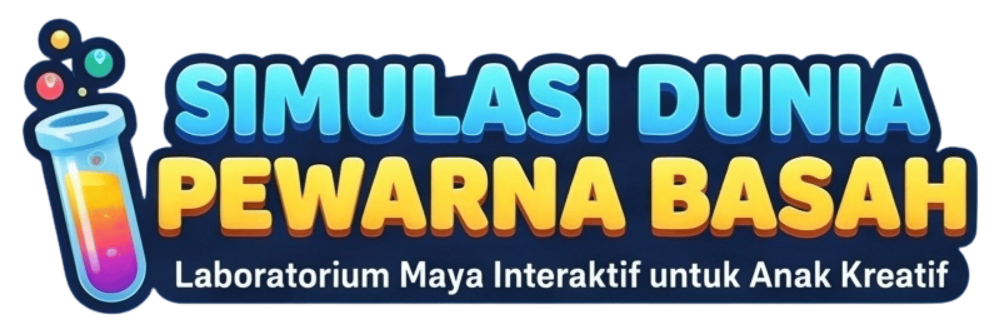
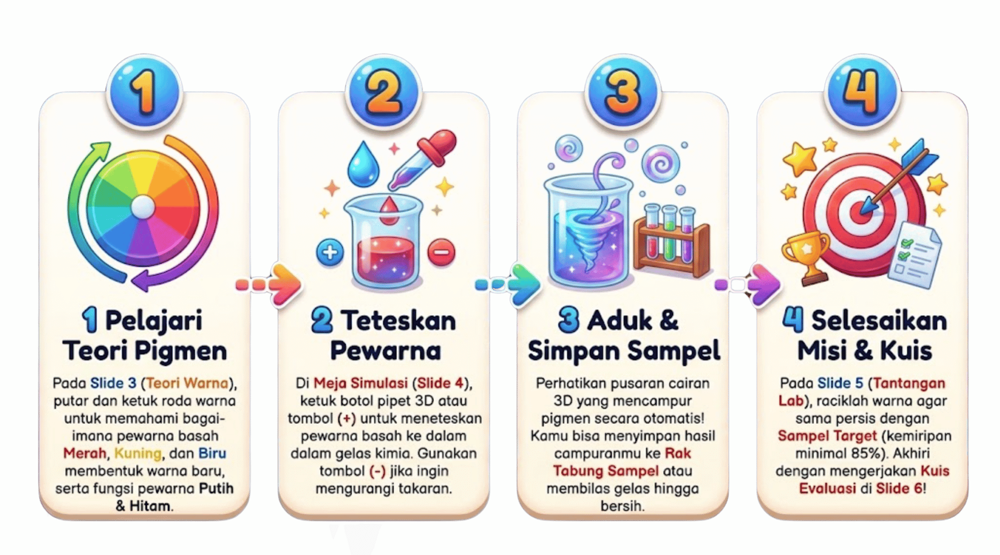

Pilih topik di bawah ini untuk mencoba simulasi konsep teori warna:
Warna Primer adalah warna dasar biang pewarna basah yang tidak dapat dibuat dari campuran warna lain.
Dalam laboratorium pewarna basah, kita menggunakan pewarna Putih dan Hitam untuk mengatur kecerahan dan kepekatan warna murni (Hue):
Keluarga warna Merah, Oranye, dan Kuning. Memberikan kesan semangat, hangat seperti api dan sinar matahari, serta tampak lebih dekat di mata.
Keluarga warna Hijau, Biru, dan Ungu. Memberikan kesan sejuk seperti air, es, dan pepohonan, serta menenangkan.
Dua warna yang letaknya saling berseberangan di Roda Warna (contoh: Merah ↔ Hijau, Kuning ↔ Ungu, Biru ↔ Oranye). Jika diletakkan berdampingan tampak sangat kontras, namun jika dicampur dalam pewarna basah akan menghasilkan warna Cokelat Netral / Gelap!
Klik pasangan warna berseberangan di bawah ini untuk melihat hasil percampuran cairan pewarnanya:
Simpan warna hasil racikanmu. Ketuk tabung untuk memuatnya kembali!
Teteskan pewarna dari botol pipet di atas untuk mengamati reaksi percampuran pigmen basah secara langsung!
Campurkan dua warna primer yang menghasilkan warna hangat Jingga / Oranye!
Rekap hasil belajar, eksperimen, dan evaluasi pencampuran pewarna basahmu:
Luar biasa! Takaran tetesan pewarna basahmu sangat akurat.
Murid mampu memahami konsep paduan warna dalam pewarna basah dan menyimulasikannya.
2. Pengembang Konten
- Ikhwanul Furqon, S.Pd., M.Pd., Gr. (SMAN 7 Kerinci).
- Abdul Haris, S.Pd.I., S.Pd.,SD. (SDN Kalideres 07 Pagi).
3. Referensi
- Hidayatulloh, T., dan Fauziah, A. (2024) Panduan Guru Seni Rupa untuk SD/MI Kelas V (Edisi Revisi). Jakarta: Pusat Perbukuan, Kemendikbudristek RI.
- Kerangka dasar lab maya, aset gambar, suara dan font dibuat dengan Gemini AI.